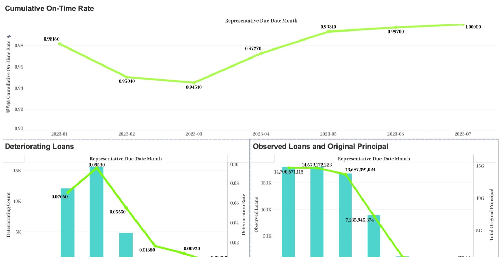
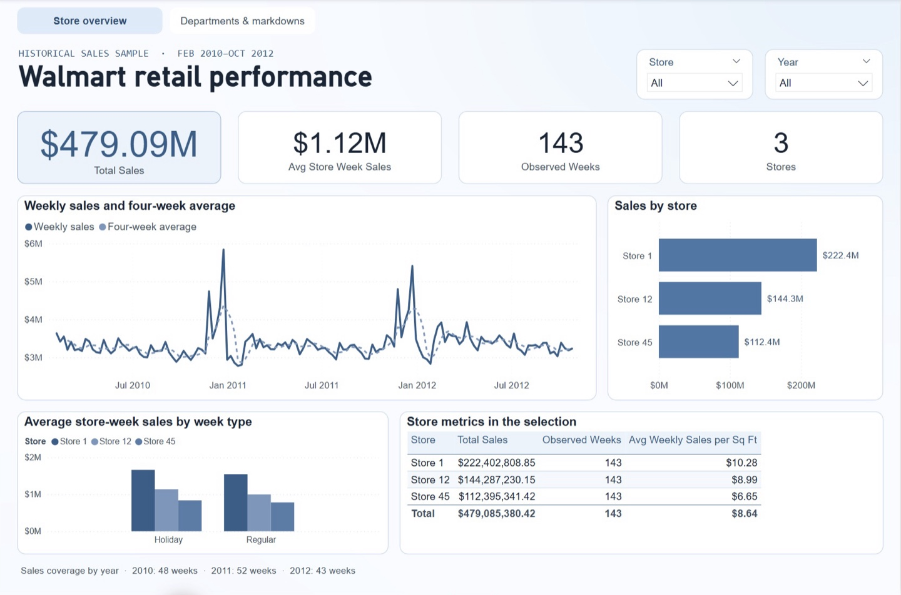
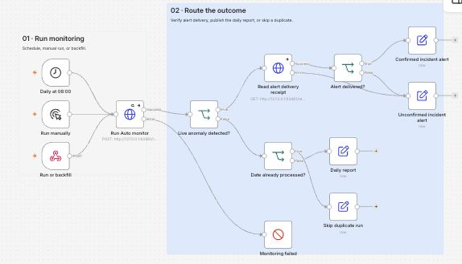
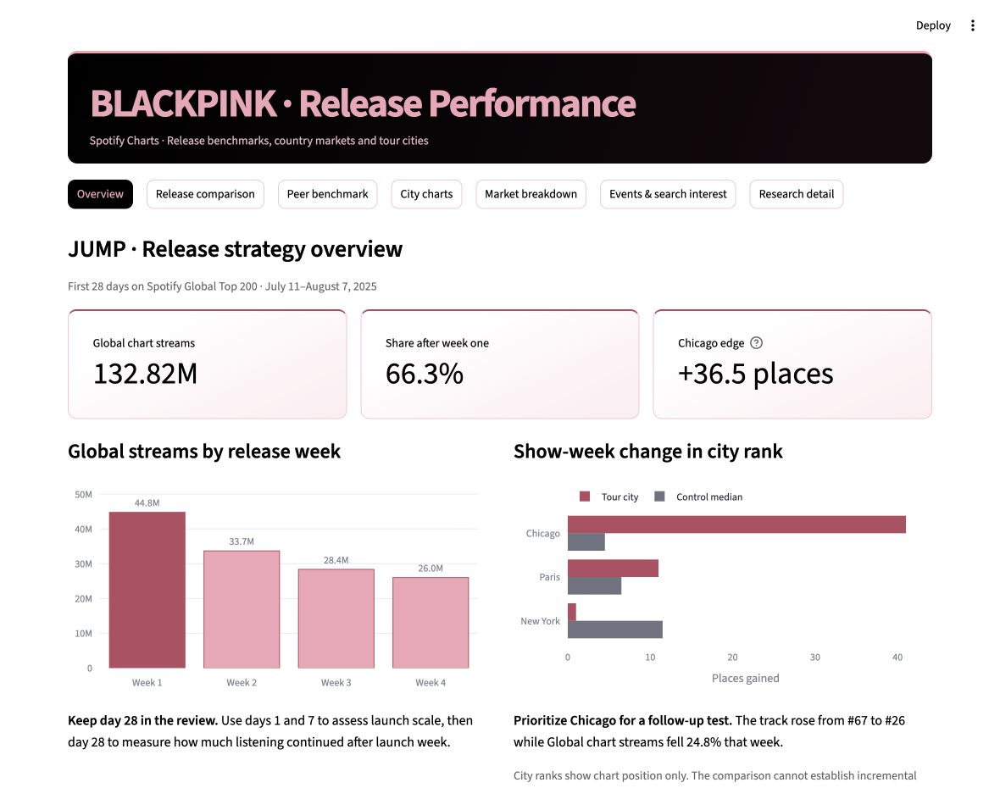

Projects
Dashboards, analysis, and automation projects across finance, retail, operations, and music.

Loan Portfolio Risk Monitor
I reconciled loan KPIs across seven periods, built two interactive Tableau views, and wrote a Period 3 risk brief.

Walmart Retail Sales Analysis
I validated a MySQL pipeline and built a two-page Power BI report comparing sales, departments, and markdown coverage across three stores.

Ops Monitoring Pipeline
I built a Python monitor and six n8n workflows that route daily KPIs and carry alerts from acknowledgement to resolution. The demo uses synthetic orders.

BLACKPINK Release Performance
I built a dashboard that benchmarks JUMP’s first 28 days on Spotify and compares chart movement around tour stops.